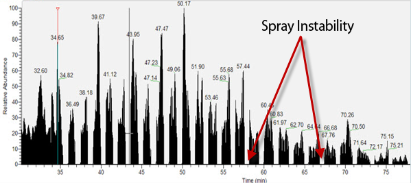
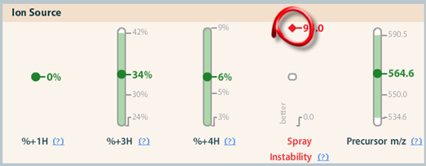
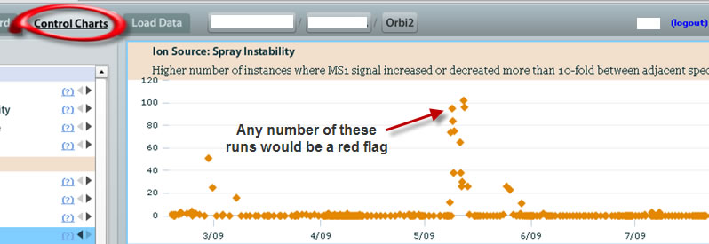
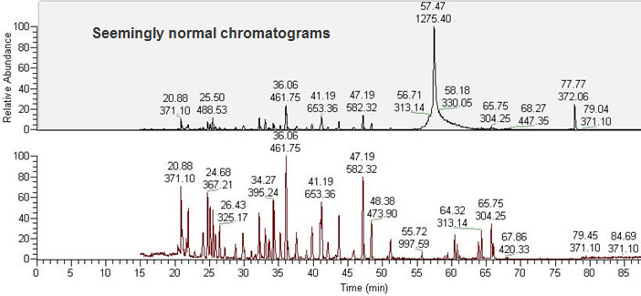
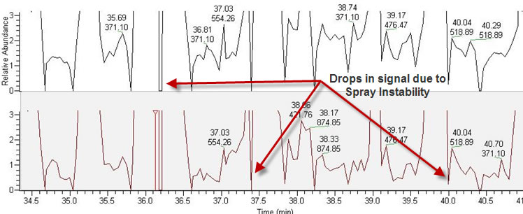

Spray Instability is a common Ion Source issue that most mass spectrometrists will encounter some time or another. Often, this can be a dramatic problem, easily seen by looking through the mass spectra. In this case, you will notice a sudden drop-off, as if the liquid simply stopped coming through the electrospray needle . For this run, it occurred continuously throughout the entire run:

However, in other cases, the Spray Instability interference can be more subtle. Here we analyze how a tool such as MassQC can alert a technician to a spray disturbance , although you may not see it in the mass spectra. By looking at the MassQC Dashboard , it is apparent that there is a Spray Instabilit y issue:

Although we have highlighted one out of range run above in the Dashboard , below we see several that are out of range:

From a previous out of range run, we can see how subtle the instability issue really is. In this case, the mass spectrometer data don't show the typical interruption pattern seen above. Rather, here the Total Ion Current and base peak chromatogram look normal:

But as we have seen here before, upon closer examination, we notice the Spray Instability interruptions happening quite frequently, but at the very low end of the intensity. MassQC flagged a run that otherwise may not have been caught by the technician:
